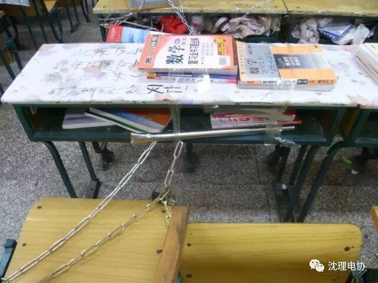
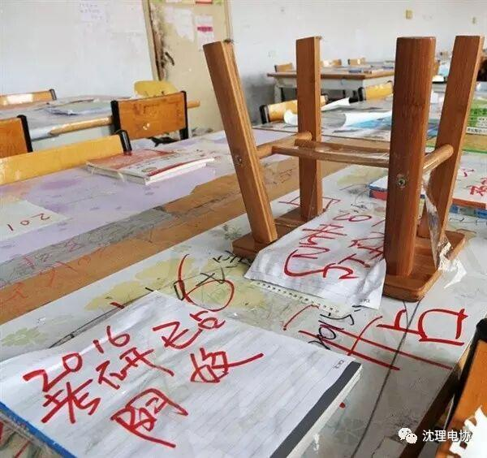

二维码——让占座不再粗暴
二维码占座
让占座不再粗暴
无论你是今年刚入学的小鲜肉，亦或早已熟悉校园的学长学姐，想必都跟经历过想去图书馆学习，却苦于找不到座位的尴尬。尤其是现在临近期末，图书馆内更是一“座”难求。
想进图书馆学习的你，都用过什么方法占座呢？摆书本？贴标语？甚至直接上锁？
NONONO让小编告诉你，这些方法都OUT了，快跟小编一起学学如何优雅的占座吧！



这些都out了
“二维码占座”是浙江财经大学大二学生黄佳美带来的项目，是款智能座位预约手机软件。安装这款软件后，你只要拿起手机扫一扫桌上的二维码，就可以轻松占好座位，并且限时，让人人有其座。这不仅节约了大家找空位的时间，而且有效地避免了不合理占座情况的发生。
妈妈再也不用担心我去图书馆没有座位啦！
小编希望我们学校也能尽快出台类似的图书馆占座政策，让更多希望在图书馆学习的同学不再为找座而苦恼，不再被已占座的标语所阻拦了学习的热情，让学校的公共资源得到合理运用！
快，关注这个公众号，一起涨姿势～
沈理电协
你值得关注！